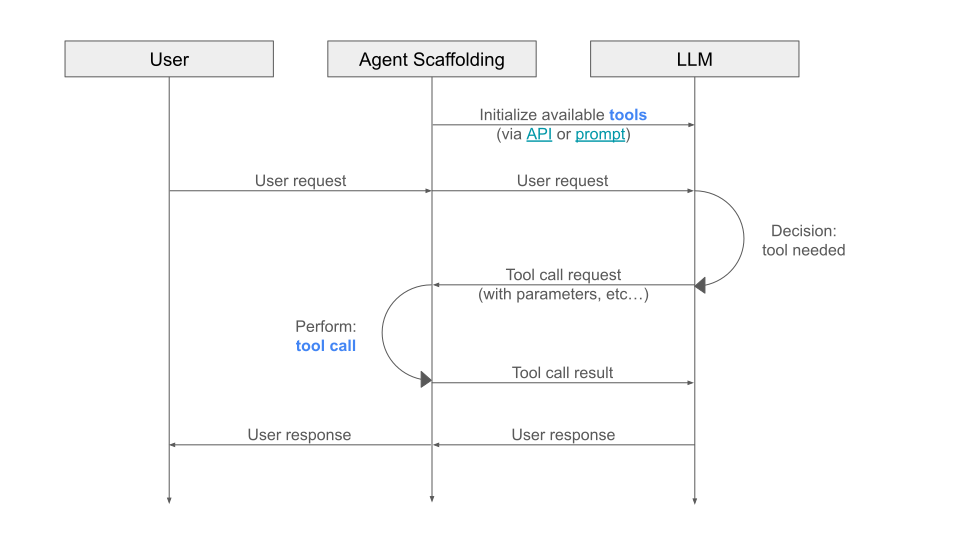
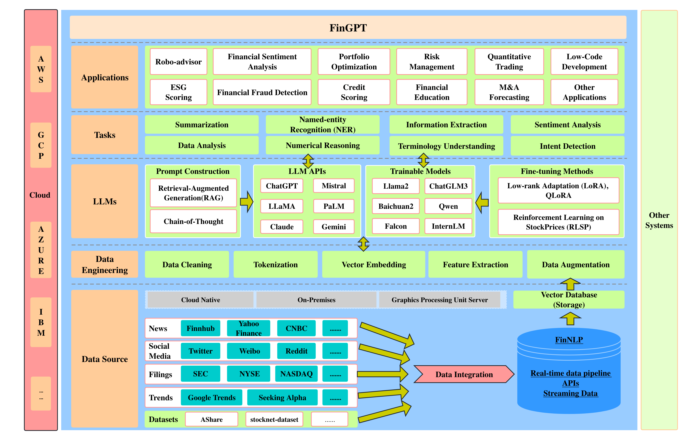

Building a Financial Research Assistant with ChatKit#
Duration: 1 hour 45 minutes Learning Objectives:
Set up and run the ChatKit starter app
Understand ChatKit configuration and workflows
Integrate SEC EDGAR and Yahoo Finance APIs
Build custom tools for financial data retrieval
Deploy a production-ready financial assistant

The augmented LLM: your assistant will combine an LLM with tools (SEC EDGAR, Yahoo Finance) and retrieval capabilities. Source: Anthropic - Building Effective Agents
What We’re Building#
A Company Research Assistant that can:
Answer questions about any public company
Pull data from SEC filings (10-K, 10-Q, 8-K)
Fetch current stock prices and market data
Provide sources for all information
Stream responses in real-time
Example interactions:
“What was Apple’s revenue in the most recent quarter?”
“Show me Tesla’s latest 10-K filing summary”
“Compare Microsoft and Google’s profit margins”
“What’s the current stock price of NVIDIA?”
Part 1: Setting Up ChatKit Starter App (20 minutes)#
Prerequisites#
Make sure you have:
OpenAI API key (get one here)
Node.js 18.17+ installed
Git installed
Step 1: Clone the Starter App#
# Clone the repository
git clone https://github.com/openai/openai-chatkit-starter-app.git
cd openai-chatkit-starter-app
# Install dependencies
npm install
Step 2: Configure Environment Variables#
# Create environment file
cp .env.example .env.local
Edit .env.local:
# .env.local
OPENAI_API_KEY=sk-proj-xxxxxxxxxxxxxxxxxxxxx
CHATKIT_WORKFLOW_ID=your-workflow-id # We'll set this up next
Step 3: Create a ChatKit Workflow#
ChatKit uses workflows to define how your assistant behaves. You can create workflows in two ways:
Option A: Using ChatKit Studio (Visual Builder)#
Go to ChatKit Studio
Sign in with your OpenAI account
Click “New Workflow”
Give it a name: “Company Research Assistant”
Add a system prompt:
You are a financial research assistant that helps users research public companies.
You have access to tools that can:
1. Fetch SEC filings (10-K, 10-Q, 8-K) for any company
2. Get current stock prices and market data
3. Search company information
When answering questions:
- Always cite your sources (which SEC filing or data source)
- Be precise with numbers and dates
- Explain financial terms if the user might not know them
- Suggest follow-up questions the user might find helpful
If you don't have enough information, explain what additional data would help.
Copy the Workflow ID from the URL or settings
Paste it into
.env.local
Option B: Using the API (Programmatic)#
# We'll use the pre-configured workflow for now
# You can customize it later through the dashboard
Step 4: Run the App#
npm run dev
Visit http://localhost:3000
You should see the ChatKit interface! Try asking a question.
Understanding the Starter App Structure#
openai-chatkit-starter-app/
|-- app/
| |-- api/
| | `-- chatkit/
| | `-- sessions/
| | `-- route.ts # Creates chat sessions
| |-- layout.tsx # Root layout
| `-- page.tsx # Main chat page
|-- components/
| `-- ChatKitPanel.tsx # ChatKit component
|-- hooks/
| `-- useChatKit.ts # ChatKit React hook
|-- lib/
| `-- config.ts # Starter prompts & config
`-- .env.local # Environment variables
Key files we’ll modify:
lib/config.ts- Starter prompts and app configcomponents/ChatKitPanel.tsx- UI customizationapp/api/chatkit/sessions/route.ts- Session creation
Part 2: Integrating Financial Data Sources (30 minutes)#
Now let’s add the ability to fetch real financial data!
Install Required Packages#
We’ll use Node.js libraries to access financial data:
# For SEC filings - we'll use the SEC API directly
npm install node-fetch
# For stock data - yfinance alternative for Node.js
npm install yahoo-finance2
Create Financial Data API Routes#
SEC Filings API#
// app/api/sec/filings/route.ts
import { NextResponse } from 'next/server';
export async function GET(request: Request) {
const { searchParams } = new URL(request.url);
const ticker = searchParams.get('ticker')?.toUpperCase();
const formType = searchParams.get('formType') || '10-Q'; // 10-Q, 10-K, 8-K
if (!ticker) {
return NextResponse.json(
{ error: 'Ticker required' },
{ status: 400 }
);
}
try {
// Step 1: Get CIK (Central Index Key) from ticker
const cikResponse = await fetch(
'https://www.sec.gov/files/company_tickers.json',
{
headers: {
'User-Agent': 'Company Research Assistant contact@yourschool.edu',
},
}
);
const companies = await cikResponse.json();
const company = Object.values(companies).find(
(c: any) => c.ticker === ticker
) as any;
if (!company) {
return NextResponse.json(
{ error: 'Company not found' },
{ status: 404 }
);
}
// Step 2: Get recent filings for this company
const cik = String(company.cik_str).padStart(10, '0');
const submissionsResponse = await fetch(
`https://data.sec.gov/submissions/CIK${cik}.json`,
{
headers: {
'User-Agent': 'Company Research Assistant contact@yourschool.edu',
},
}
);
const submissions = await submissionsResponse.json();
// Step 3: Filter for the requested form type
const recentFilings = submissions.filings.recent;
const filingIndices = recentFilings.form
.map((form: string, index: number) =>
form === formType ? index : -1
)
.filter((index: number) => index !== -1)
.slice(0, 5); // Get last 5 filings
const filings = filingIndices.map((index: number) => ({
form: recentFilings.form[index],
filingDate: recentFilings.filingDate[index],
accessionNumber: recentFilings.accessionNumber[index],
primaryDocument: recentFilings.primaryDocument[index],
reportDate: recentFilings.reportDate[index],
url: `https://www.sec.gov/Archives/edgar/data/${company.cik_str}/${recentFilings.accessionNumber[index].replace(/-/g, '')}/${recentFilings.primaryDocument[index]}`,
}));
return NextResponse.json({
company: {
name: company.title,
ticker: company.ticker,
cik: company.cik_str,
},
filings,
});
} catch (error) {
console.error('SEC API Error:', error);
return NextResponse.json(
{ error: 'Failed to fetch SEC data' },
{ status: 500 }
);
}
}
Test it:
curl "http://localhost:3000/api/sec/filings?ticker=AAPL&formType=10-Q"
Stock Price API#
// app/api/stock/price/route.ts
import { NextResponse } from 'next/server';
import yahooFinance from 'yahoo-finance2';
export async function GET(request: Request) {
const { searchParams } = new URL(request.url);
const ticker = searchParams.get('ticker')?.toUpperCase();
if (!ticker) {
return NextResponse.json(
{ error: 'Ticker required' },
{ status: 400 }
);
}
try {
// Get quote data
const quote = await yahooFinance.quote(ticker);
// Get historical data (last 30 days)
const endDate = new Date();
const startDate = new Date();
startDate.setDate(startDate.getDate() - 30);
const historicalData = await yahooFinance.historical(ticker, {
period1: startDate,
period2: endDate,
interval: '1d',
});
return NextResponse.json({
ticker: ticker,
name: quote.longName || quote.shortName,
price: quote.regularMarketPrice,
change: quote.regularMarketChange,
changePercent: quote.regularMarketChangePercent,
dayHigh: quote.regularMarketDayHigh,
dayLow: quote.regularMarketDayLow,
volume: quote.regularMarketVolume,
marketCap: quote.marketCap,
fiftyTwoWeekHigh: quote.fiftyTwoWeekHigh,
fiftyTwoWeekLow: quote.fiftyTwoWeekLow,
historical: historicalData.slice(-7), // Last 7 days
currency: quote.currency,
exchange: quote.fullExchangeName,
});
} catch (error) {
console.error('Yahoo Finance Error:', error);
return NextResponse.json(
{ error: 'Failed to fetch stock data' },
{ status: 500 }
);
}
}
Test it:
curl "http://localhost:3000/api/stock/price?ticker=AAPL"
Company Information API#
// app/api/company/info/route.ts
import { NextResponse } from 'next/server';
import yahooFinance from 'yahoo-finance2';
export async function GET(request: Request) {
const { searchParams } = new URL(request.url);
const ticker = searchParams.get('ticker')?.toUpperCase();
if (!ticker) {
return NextResponse.json(
{ error: 'Ticker required' },
{ status: 400 }
);
}
try {
const quoteSummary = await yahooFinance.quoteSummary(ticker, {
modules: ['assetProfile', 'summaryDetail', 'financialData'],
});
const profile = quoteSummary.assetProfile;
const financials = quoteSummary.financialData;
return NextResponse.json({
ticker,
name: profile?.longName,
description: profile?.longBusinessSummary,
sector: profile?.sector,
industry: profile?.industry,
website: profile?.website,
employees: profile?.fullTimeEmployees,
headquarters: {
city: profile?.city,
state: profile?.state,
country: profile?.country,
},
financials: {
revenue: financials?.totalRevenue,
profitMargins: financials?.profitMargins,
grossMargins: financials?.grossMargins,
ebitda: financials?.ebitda,
debtToEquity: financials?.debtToEquity,
},
});
} catch (error) {
console.error('Company Info Error:', error);
return NextResponse.json(
{ error: 'Failed to fetch company information' },
{ status: 500 }
);
}
}
Part 3: Creating ChatKit Tools (25 minutes)#
Now we’ll connect these APIs to ChatKit using function calling.
Understanding ChatKit Tools#
ChatKit tools allow the AI to call your API endpoints. When the user asks a question, the AI can:
Decide which tool to call
Extract parameters (like ticker symbol)
Call your API
Use the results to formulate an answer

How function calling works: The LLM requests a tool call, the Agent Scaffolding executes it, and returns the result. Source: Symflower
Define Tools in Your Workflow#
You can define tools in ChatKit Studio or programmatically. Here’s how to do it programmatically:
// lib/tools.ts
export const financialTools = [
{
type: 'function',
function: {
name: 'get_sec_filings',
description: 'Retrieve SEC filings (10-K, 10-Q, 8-K) for a public company',
parameters: {
type: 'object',
properties: {
ticker: {
type: 'string',
description: 'The stock ticker symbol (e.g., AAPL, MSFT)',
},
formType: {
type: 'string',
enum: ['10-K', '10-Q', '8-K'],
description: 'The type of SEC filing to retrieve',
},
},
required: ['ticker'],
},
},
},
{
type: 'function',
function: {
name: 'get_stock_price',
description: 'Get current stock price and market data for a company',
parameters: {
type: 'object',
properties: {
ticker: {
type: 'string',
description: 'The stock ticker symbol (e.g., AAPL, MSFT)',
},
},
required: ['ticker'],
},
},
},
{
type: 'function',
function: {
name: 'get_company_info',
description: 'Get detailed company information including business description, financials, and headquarters',
parameters: {
type: 'object',
properties: {
ticker: {
type: 'string',
description: 'The stock ticker symbol (e.g., AAPL, MSFT)',
},
},
required: ['ticker'],
},
},
},
];

Multi-tool routing: The LLM analyzes the user query and routes to the appropriate tool (SEC filings, stock prices, or company info). Source: Anthropic - Building Effective Agents
Handle Tool Calls in Your Chat API#
// app/api/chat/route.ts
import { NextResponse } from 'next/server';
import OpenAI from 'openai';
import { financialTools } from '@/lib/tools';
const openai = new OpenAI({
apiKey: process.env.OPENAI_API_KEY,
});
export async function POST(request: Request) {
const { messages } = await request.json();
try {
// Initial request with tools
const response = await openai.chat.completions.create({
model: 'gpt-4-turbo-preview',
messages: [
{
role: 'system',
content: `You are a financial research assistant. Use your tools to fetch real-time data about companies when users ask questions.
Always cite your sources and be precise with numbers.`,
},
...messages,
],
tools: financialTools,
tool_choice: 'auto',
});
const responseMessage = response.choices[0].message;
// Check if the model wants to call a function
if (responseMessage.tool_calls) {
// Execute tool calls
const toolResults = await Promise.all(
responseMessage.tool_calls.map(async (toolCall) => {
const functionName = toolCall.function.name;
const functionArgs = JSON.parse(toolCall.function.arguments);
let result;
switch (functionName) {
case 'get_sec_filings':
const secRes = await fetch(
`${process.env.NEXT_PUBLIC_BASE_URL || 'http://localhost:3000'}/api/sec/filings?ticker=${functionArgs.ticker}&formType=${functionArgs.formType || '10-Q'}`
);
result = await secRes.json();
break;
case 'get_stock_price':
const stockRes = await fetch(
`${process.env.NEXT_PUBLIC_BASE_URL || 'http://localhost:3000'}/api/stock/price?ticker=${functionArgs.ticker}`
);
result = await stockRes.json();
break;
case 'get_company_info':
const infoRes = await fetch(
`${process.env.NEXT_PUBLIC_BASE_URL || 'http://localhost:3000'}/api/company/info?ticker=${functionArgs.ticker}`
);
result = await infoRes.json();
break;
default:
result = { error: 'Unknown function' };
}
return {
tool_call_id: toolCall.id,
role: 'tool',
name: functionName,
content: JSON.stringify(result),
};
})
);
// Send tool results back to the model
const secondResponse = await openai.chat.completions.create({
model: 'gpt-4-turbo-preview',
messages: [
{
role: 'system',
content: `You are a financial research assistant. Use your tools to fetch real-time data about companies when users ask questions.`,
},
...messages,
responseMessage,
...toolResults,
],
});
return NextResponse.json({
message: secondResponse.choices[0].message.content,
toolCalls: responseMessage.tool_calls,
});
}
return NextResponse.json({
message: responseMessage.content,
});
} catch (error) {
console.error('Chat API Error:', error);
return NextResponse.json(
{ error: 'Failed to process chat request' },
{ status: 500 }
);
}
}
Update the Frontend to Use Custom Chat#
// app/page.tsx
'use client';
import { useState } from 'react';
export default function Home() {
const [messages, setMessages] = useState<any[]>([]);
const [input, setInput] = useState('');
const [loading, setLoading] = useState(false);
const sendMessage = async () => {
if (!input.trim()) return;
const newMessage = { role: 'user', content: input };
const updatedMessages = [...messages, newMessage];
setMessages(updatedMessages);
setInput('');
setLoading(true);
try {
const response = await fetch('/api/chat', {
method: 'POST',
headers: { 'Content-Type': 'application/json' },
body: JSON.stringify({ messages: updatedMessages }),
});
const data = await response.json();
setMessages([
...updatedMessages,
{ role: 'assistant', content: data.message },
]);
} catch (error) {
console.error('Error:', error);
} finally {
setLoading(false);
}
};
return (
<div className="flex flex-col h-screen max-w-4xl mx-auto p-4">
<h1 className="text-2xl font-bold mb-4">Company Research Assistant</h1>
{/* Messages */}
<div className="flex-1 overflow-y-auto mb-4 space-y-4">
{messages.map((msg, idx) => (
<div
key={idx}
className={`p-4 rounded-lg ${
msg.role === 'user'
? 'bg-blue-100 ml-auto max-w-[80%]'
: 'bg-gray-100 mr-auto max-w-[80%]'
}`}
>
<div className="font-semibold mb-1">
{msg.role === 'user' ? 'You' : 'Assistant'}
</div>
<div className="whitespace-pre-wrap">{msg.content}</div>
</div>
))}
{loading && (
<div className="bg-gray-100 p-4 rounded-lg max-w-[80%]">
<div className="animate-pulse">Thinking...</div>
</div>
)}
</div>
{/* Input */}
<div className="flex gap-2">
<input
type="text"
value={input}
onChange={(e) => setInput(e.target.value)}
onKeyPress={(e) => e.key === 'Enter' && sendMessage()}
placeholder="Ask about any public company..."
className="flex-1 p-3 border rounded-lg"
disabled={loading}
/>
<button
onClick={sendMessage}
disabled={loading}
className="px-6 py-3 bg-blue-500 text-white rounded-lg hover:bg-blue-600 disabled:bg-gray-300"
>
Send
</button>
</div>
{/* Suggested Questions */}
<div className="mt-4 flex flex-wrap gap-2">
{[
"What's Apple's current stock price?",
"Show me Microsoft's latest 10-K",
"Tell me about NVIDIA's business",
].map((suggestion) => (
<button
key={suggestion}
onClick={() => setInput(suggestion)}
className="px-3 py-1 text-sm bg-gray-200 hover:bg-gray-300 rounded"
>
{suggestion}
</button>
))}
</div>
</div>
);
}
Part 4: Customization & Enhancement (20 minutes)#
Add Citations and Sources#
Update your system prompt to always include sources:
const systemPrompt = `You are a financial research assistant that helps users research public companies.
When providing information:
1. Always cite your sources with specific details:
- For SEC filings: Include form type (10-K/10-Q), date filed, and which section
- For stock data: Include timestamp and exchange
- For company info: Specify it's from company profile
2. Format financial numbers clearly:
- Use appropriate units (millions, billions)
- Include currency symbols
- Show percentage changes
3. Be conversational but precise:
- Explain jargon when needed
- Suggest related questions
- Admit when data is unavailable
Example response format:
"According to Apple's 10-Q filed on August 3, 2024, their revenue for Q3 2024 was $85.8 billion, representing a 5% increase year-over-year.
Current stock price (NASDAQ, as of [timestamp]): $182.45, up 2.3% today.
Would you like me to compare this to their competitors or analyze their profit margins?"`;
Add Rich Formatting#
Create components for displaying financial data:
// components/StockCard.tsx
export function StockCard({ data }: { data: any }) {
const isPositive = data.change >= 0;
return (
<div className="border rounded-lg p-4 bg-white shadow-sm">
<div className="flex justify-between items-start">
<div>
<h3 className="text-xl font-bold">{data.ticker}</h3>
<p className="text-gray-600">{data.name}</p>
</div>
<div className="text-right">
<div className="text-2xl font-bold">
${data.price.toFixed(2)}
</div>
<div
className={`text-sm ${
isPositive ? 'text-green-600' : 'text-red-600'
}`}
>
{isPositive ? '+' : ''}
{data.change.toFixed(2)} (
{data.changePercent.toFixed(2)}%)
</div>
</div>
</div>
<div className="mt-4 grid grid-cols-2 gap-4 text-sm">
<div>
<span className="text-gray-600">Day Range:</span>
<div className="font-medium">
${data.dayLow} - ${data.dayHigh}
</div>
</div>
<div>
<span className="text-gray-600">52W Range:</span>
<div className="font-medium">
${data.fiftyTwoWeekLow} - ${data.fiftyTwoWeekHigh}
</div>
</div>
</div>
</div>
);
}
Add Error Handling & Loading States#
// Example with better UX
const [error, setError] = useState<string | null>(null);
const sendMessage = async () => {
setError(null);
// ... existing code
try {
const response = await fetch('/api/chat', {
method: 'POST',
headers: { 'Content-Type': 'application/json' },
body: JSON.stringify({ messages: updatedMessages }),
});
if (!response.ok) {
throw new Error('Failed to get response');
}
const data = await response.json();
// ... existing code
} catch (error) {
setError('Sorry, something went wrong. Please try again.');
console.error('Error:', error);
}
};
// In your JSX
{error && (
<div className="bg-red-100 border border-red-400 text-red-700 px-4 py-3 rounded">
{error}
</div>
)}
Part 5: Deployment & Testing (10 minutes)#
Final Checklist Before Deployment#
Environment variables set in
.env.localAll API endpoints working locally
Error handling in place
Loading states implemented
Responsive design tested
API rate limits considered
Deploy to Vercel#
# Commit your changes
git add .
git commit -m "Add financial research assistant with ChatKit"
# Push to GitHub
git push origin main
# Deploy via Vercel dashboard or CLI
vercel --prod
Set Production Environment Variables#
In Vercel dashboard:
Go to Settings -> Environment Variables
Add:
OPENAI_API_KEYCHATKIT_WORKFLOW_IDNEXT_PUBLIC_BASE_URL(your production URL)
Test in Production#
Try these queries:
“What’s Tesla’s current stock price?”
“Show me Apple’s latest quarterly filing”
“Tell me about Microsoft’s business and recent performance”
Advanced Features (Optional Extensions)#
1. Multi-Company Comparison#
{
type: 'function',
function: {
name: 'compare_companies',
description: 'Compare financial metrics of multiple companies',
parameters: {
type: 'object',
properties: {
tickers: {
type: 'array',
items: { type: 'string' },
description: 'Array of ticker symbols to compare',
},
metrics: {
type: 'array',
items: { type: 'string' },
description: 'Metrics to compare (revenue, profitMargins, etc.)',
},
},
required: ['tickers'],
},
},
}
2. Historical Analysis#
Add support for historical financial statements using the SEC’s XBRL data:
// Fetch historical financial data
const getHistoricalFinancials = async (ticker: string, years: number) => {
// Use SEC's Company Facts API
const cik = await getCIKFromTicker(ticker);
const response = await fetch(
`https://data.sec.gov/api/xbrl/companyfacts/CIK${cik}.json`,
{
headers: {
'User-Agent': 'Company Research Assistant contact@yourschool.edu',
},
}
);
const data = await response.json();
// Extract financial metrics over time
return processFinancialFacts(data, years);
};
3. News Integration#
Add recent news using a news API:
// app/api/news/route.ts
// Use NewsAPI, Finnhub, or Alpha Vantage
4. Visualization#
Add charts using Recharts or Chart.js:
import { LineChart, Line, XAxis, YAxis, CartesianGrid, Tooltip } from 'recharts';
<LineChart data={historicalData} width={600} height={300}>
<CartesianGrid strokeDasharray="3 3" />
<XAxis dataKey="date" />
<YAxis />
<Tooltip />
<Line type="monotone" dataKey="price" stroke="#8884d8" />
</LineChart>
Resources & Documentation#
ChatKit Resources#
Financial Data APIs#
Alpha Vantage - Alternative stock API
Tools & Libraries#
Learning Resources#
Common Issues & Troubleshooting#
Issue: “API Key Invalid”#
Solution:
Check
.env.localhas correctOPENAI_API_KEYRestart dev server after changing env variables
Ensure no extra spaces in the key
Issue: “SEC API Returns 403”#
Solution:
Add a proper User-Agent header (required by SEC)
Use format:
'User-Agent': 'YourAppName contact@email.com'
Issue: “Yahoo Finance Returns No Data”#
Solution:
Verify ticker symbol is correct
Some international stocks may not be available
Check the ticker format (use Yahoo’s format, e.g.,
BRK-Bfor Berkshire Hathaway)
Issue: “ChatKit Not Streaming”#
Solution:
Ensure you’re using
stream: truein OpenAI API callUse
StreamingTextResponsefrom Vercel AI SDKCheck network tab for SSE (Server-Sent Events) connection
Issue: “Tool Not Being Called”#
Solution:
Check tool description is clear and specific
Verify function parameters match expected format
Look at the system prompt - it should encourage tool usage
Assessment & Exercises#
Exercise 1: Add a New Tool#
Create a tool that fetches insider trading data from SEC Form 4.
Hints:
Use SEC’s EDGAR search for Form 4 filings
Parse XML data from the filings
Return recent insider purchases/sales
Exercise 2: Company Comparison#
Extend the assistant to compare two companies side-by-side.
Requirements:
Accept multiple ticker symbols
Fetch data for all companies
Present comparison in a table format
Exercise 3: Portfolio Tracker#
Build a feature that lets users track multiple stocks.
Requirements:
Store user’s portfolio (use local storage or database)
Calculate total value and gains/losses
Show daily changes
Key Takeaways#
ChatKit dramatically simplifies building AI chat interfaces
Function calling allows AI to access real-time data
SEC EDGAR provides comprehensive company filing data
Yahoo Finance offers market data without authentication
Vercel deployment makes production hosting trivial
Proper error handling and citations build user trust
Next Steps & Further Learning#
Immediate Next Steps#
Customize the UI to match your style
Add more tools (news, competitors, industry data)
Implement authentication for user-specific features
Add data caching to reduce API calls
Advanced Topics#

The FinGPT framework shows how financial LLM applications integrate data sources, engineering, and domain-specific tasks. Source: AI4Finance Foundation
RAG (Retrieval Augmented Generation) for document search
Vector databases for semantic search of filings
Real-time updates with WebSockets
Multi-modal inputs (analyze financial charts/images)
Fine-tuning models for financial domain
Production Considerations#
Rate limiting to prevent API abuse
Caching strategies for frequently requested data
Monitoring & logging with tools like Sentry
A/B testing different prompts and tools
Compliance - ensure SEC fair disclosure rules
Congratulations! 🎉#
You’ve built a production-ready financial research assistant using:
✓ Next.js for full-stack development
✓ ChatKit for AI chat interface
✓ SEC EDGAR for financial filings
✓ Yahoo Finance for market data
✓ Vercel for deployment
What you can do now:
Extend it with more data sources
Add visualization and analytics
Build a portfolio tracker
Create alerts for company events
Share it with others!
Feedback & Questions#
Questions to consider:
What other financial data would be useful?
How could we improve the user experience?
What features would make this production-ready?
How can we ensure data accuracy and reliability?
Resources for help: